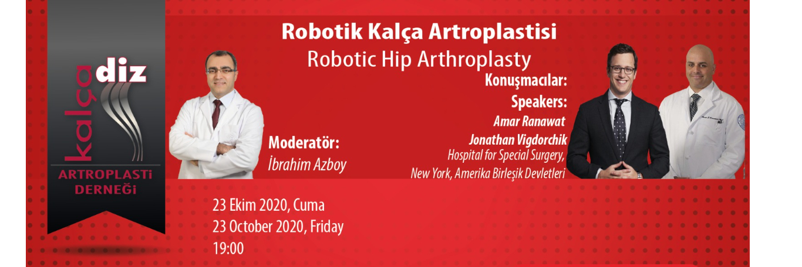

Değerli Meslektaşlarımız,
Kalça Diz Artroplasti Derneği eğitim faaliyetleri içerisinde yer alan "Webinar" oturumu 23 Ekim 2020, Cuma günü saat 19:00'da gerçekleştirilecektir.
Moderatörlüğünü İbrahim Azboy'un yapacağı webinarda Hospital for Special Surgery’den Amar Ranawat ve Jonathan Vigdorchik “Robotik Kalça Artroplastisi” konusunu ele alacaklardır. Webinar'a http://webinar.artroplasti.org.tr adresinden, bilgisayar ve mobil cihazlarınızla bağlanabilirsiniz.
Bu eğitim yılı içinde düzenlediğimiz diğer webinarlarımızın kayıtları, portalımız www.artroplasti.org.tr üzerinden dernek üyelerimizin erişimine sunulmuştur.
Saygılarımızla,
webinar kaydını izlemek için tıklayınız.

